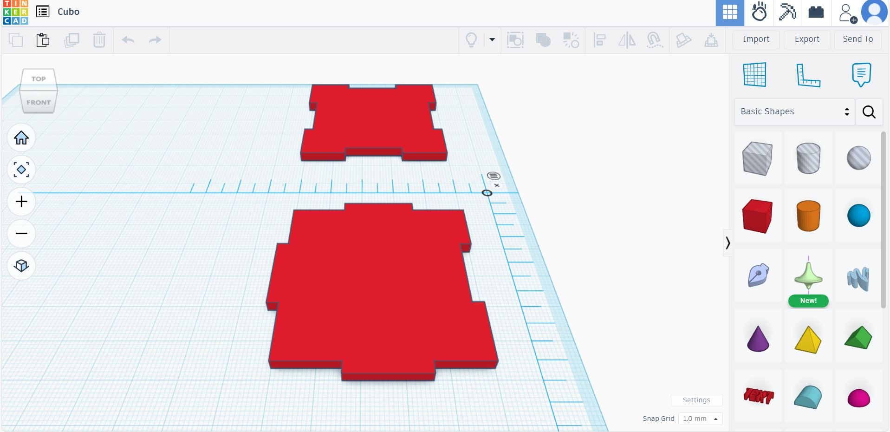

Descripción del Proyecto
El corte láser es una técnica de manufactura digital que utiliza un rayo láser de alta potencia para cortar o grabar materiales como madera, acrílico o MDF con gran precisión. En este proyecto, aprendimos a transformar un diseño digital en una pieza física utilizando una máquina de corte CNC.
Comenzamos elaborando un modelo tridimensional en Tinkercad, donde diseñamos un cubo armado mediante encajes. Este diseño nos permitió comprender cómo las dimensiones y tolerancias influyen en el ensamblaje físico de las piezas. Fue necesario ajustar medidas para que las partes encajaran perfectamente sin necesidad de adhesivos.
Posteriormente, exportamos el archivo vectorial y lo convertimos en un formato compatible con la máquina de corte láser. El software generó el G-code, que contiene las instrucciones exactas para los movimientos del láser durante el proceso de corte.
Durante la práctica, observamos la importancia de controlar parámetros como la potencia del láser, la velocidad de corte y el tipo de material, ya que estos determinan la calidad del acabado y la precisión del grabado. El resultado final fue un cubo ensamblable, demostrando el potencial de esta tecnología en el diseño de estructuras ligeras y precisas.
Gracias a esta experiencia, comprendimos cómo el corte láser< se aplica en la ingeniería para la creación rápida de prototipos, cajas para componentes electrónicos y estructuras personalizadas. Este proyecto reforzó el pensamiento de ingeniería a través del diseño, la precisión y la experimentación.